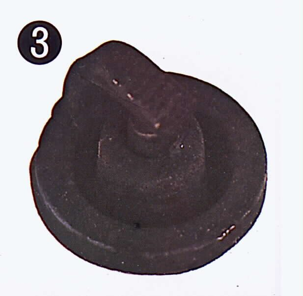
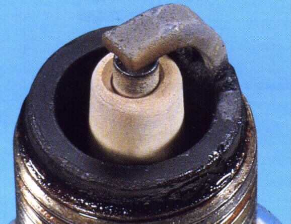

The firing end of the plug is covered in dry, black, soft soot. This is carbon from fuel that did not burn completely. The K-Light 125 manual links black carbon on the plug to a rich mixture (too much fuel for the air), and names a blocked air filter and the cold-start device as causes (PDF pages 23 and 58). Lots of slow riding and idling, a plug that is too "cold" for the use, or a weak spark can also leave soot. A sooty plug misfires and makes starting hard.
Is it safe to ride?
Yes, with care. A rich engine wastes fuel and may misfire, but is not usually damaged quickly. Fix it before the plug fouls completely.
Quick checks first
- Was the plug read after a long idle or short trip? Ride at steady speed and read it again.
- Carburettor: is the choke fully OFF when riding?
- Is the air filter dirty or oily?
- Black smoke or a fuel smell from the exhaust?
- Is the plug type the one your manual names? K-Light 125: D7RTC.
Diagnose it step by step
1After a fair test ride (steady speed, then switch off), is the new or cleaned plug still black?
- No: the soot came from idling and short trips. Ride at higher speed now and then, and keep the plug clean.
- Yes: go to step 2.
2Is the choke fully off when riding (carburettor), or does the cold-start system switch off when warm (fuel injection)?
- No: Check the choke or starter valve.
- Yes: go to step 3.
3Is the air filter clean, dry and the right type?
- No: Clean or replace the air filter.
- Yes: go to step 4.
4Carburettor: is the float level correct, with no fuel dripping from the overflow?
- No: Check the carburettor float and needle valve. A high float level makes every speed rich.
- Yes: go to step 5.
5Carburettor: was the jet or needle changed, or are the air passages blocked?
- Yes: Clean the carburettor and refit the parts listed in your manual. Do not guess jet sizes.
- No, or fuel-injected: go to step 6.
6Fuel-injected: is there a fault code for the oxygen sensor or a temperature sensor?
- Yes: Read engine fault codes (fuel injection) and Check the oxygen sensor. The K-Light 125 manual also says a loose oxygen sensor can make the ECU add fuel, and a leaking injector shows as a rich reading (PDF page 276).
- No: go to step 7.
7Is the spark strong?
- No: a weak spark leaves fuel unburnt. Weak, thin or orange spark.
- Yes: check that the plug heat range is right for your riding. Ask your dealer before changing plug type.
Causes, most likely first
| Cause | How to confirm | Fix |
|---|---|---|
| Long idling or short trips | Plug cleans up after a steady ride | Ride harder sometimes; clean plug |
| Choke left on or sticking | Choke plunger not fully closed | Check the choke or starter valve |
| Dirty air filter | Filter dark or oily | Clean or replace the air filter |
| High float level or leaking needle | Fuel at overflow; float check | Check the carburettor float and needle valve |
| Sensor or injector fault (EFI) | Fault code; workshop data | Read engine fault codes (fuel injection) |
| Weak spark | Spark tester | Check for a spark safely |
| Wrong plug heat range | Plug code differs from manual | Remove, check, gap and fit a spark plug |